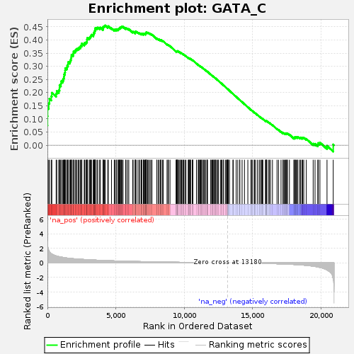

| | | Dataset | GSE18198_cov_collapsed |
| Phenotype | NoPhenotypeAvailable |
| Upregulated in class | na_pos |
| GeneSet | GATA_C |
| Enrichment Score (ES) | 0.45543474 |
| Normalized Enrichment Score (NES) | 1.6298449 |
| Nominal p-value | 0.0 |
| FDR q-value | 0.056915715 |
| FWER p-Value | 0.414 |
Table: GSEA Results Summary

Fig 1: Enrichment plot: GATA_C
Profile of the Running ES Score & Positions of GeneSet Members on the Rank Ordered List
| SYMBOL | TITLE | RANK IN GENE LIST | RANK METRIC SCORE | RUNNING ES | CORE ENRICHMENT | | 1 | JUN | NA | 0 | 5.975 | 0.0753 | Yes |
| 2 | TOB1 | NA | 5 | 2.800 | 0.1104 | Yes |
| 3 | PRDX2 | NA | 12 | 2.495 | 0.1415 | Yes |
| 4 | MYO1C | NA | 97 | 1.727 | 0.1593 | Yes |
| 5 | HBEGF | NA | 146 | 1.550 | 0.1765 | Yes |
| 6 | NFRKB | NA | 278 | 1.267 | 0.1861 | Yes |
| 7 | NRXN3 | NA | 320 | 1.216 | 0.1994 | Yes |
| 8 | ALMS1 | NA | 637 | 0.955 | 0.1962 | Yes |
| 9 | C12orf42 | NA | 681 | 0.927 | 0.2058 | Yes |
| 10 | SLC46A1 | NA | 829 | 0.863 | 0.2096 | Yes |
| 11 | ELAVL4 | NA | 882 | 0.842 | 0.2177 | Yes |
| 12 | RBMS3 | NA | 886 | 0.840 | 0.2281 | Yes |
| 13 | FRMD5 | NA | 982 | 0.808 | 0.2337 | Yes |
| 14 | CALHM5 | NA | 1000 | 0.802 | 0.2430 | Yes |
| 15 | ECHDC2 | NA | 1111 | 0.763 | 0.2473 | Yes |
| 16 | DSPP | NA | 1174 | 0.741 | 0.2536 | Yes |
| 17 | APMAP | NA | 1203 | 0.731 | 0.2615 | Yes |
| 18 | SRGAP1 | NA | 1227 | 0.725 | 0.2695 | Yes |
| 19 | MASP1 | NA | 1275 | 0.711 | 0.2762 | Yes |
| 20 | SERTAD4 | NA | 1293 | 0.706 | 0.2843 | Yes |
| 21 | UBE2H | NA | 1303 | 0.703 | 0.2927 | Yes |
| 22 | FTH1 | NA | 1411 | 0.671 | 0.2960 | Yes |
| 23 | SATB1 | NA | 1449 | 0.663 | 0.3025 | Yes |
| 24 | ZBTB20 | NA | 1505 | 0.652 | 0.3081 | Yes |
| 25 | TPM3 | NA | 1513 | 0.650 | 0.3159 | Yes |
| 26 | MID1 | NA | 1638 | 0.624 | 0.3178 | Yes |
| 27 | NECTIN2 | NA | 1674 | 0.617 | 0.3239 | Yes |
| 28 | ETV1 | NA | 1721 | 0.606 | 0.3293 | Yes |
| 29 | CDH9 | NA | 1745 | 0.600 | 0.3358 | Yes |
| 30 | ANGPT2 | NA | 1759 | 0.597 | 0.3427 | Yes |
| 31 | LYL1 | NA | 1870 | 0.576 | 0.3446 | Yes |
| 32 | IL1RL1 | NA | 1897 | 0.572 | 0.3505 | Yes |
| 33 | RBPMS | NA | 1911 | 0.571 | 0.3571 | Yes |
| 34 | PDZD2 | NA | 2022 | 0.553 | 0.3588 | Yes |
| 35 | DCN | NA | 2068 | 0.546 | 0.3635 | Yes |
| 36 | ZBTB7B | NA | 2149 | 0.537 | 0.3664 | Yes |
| 37 | CTDSPL2 | NA | 2248 | 0.525 | 0.3683 | Yes |
| 38 | PNLIPRP1 | NA | 2316 | 0.516 | 0.3715 | Yes |
| 39 | GSE1 | NA | 2404 | 0.504 | 0.3737 | Yes |
| 40 | ADORA3 | NA | 2437 | 0.501 | 0.3784 | Yes |
| 41 | HOXA3 | NA | 2509 | 0.491 | 0.3812 | Yes |
| 42 | CCSER2 | NA | 2515 | 0.490 | 0.3871 | Yes |
| 43 | CNTLN | NA | 2691 | 0.468 | 0.3845 | Yes |
| 44 | BDNF | NA | 2714 | 0.465 | 0.3893 | Yes |
| 45 | SOX5 | NA | 2804 | 0.454 | 0.3908 | Yes |
| 46 | LGI1 | NA | 2862 | 0.448 | 0.3936 | Yes |
| 47 | ZIC1 | NA | 2893 | 0.445 | 0.3978 | Yes |
| 48 | TACC1 | NA | 2895 | 0.445 | 0.4034 | Yes |
| 49 | MECOM | NA | 2915 | 0.444 | 0.4080 | Yes |
| 50 | ANKS1B | NA | 3049 | 0.433 | 0.4071 | Yes |
| 51 | FBXL7 | NA | 3104 | 0.425 | 0.4098 | Yes |
| 52 | TNFRSF19 | NA | 3141 | 0.422 | 0.4134 | Yes |
| 53 | MOGAT2 | NA | 3186 | 0.417 | 0.4165 | Yes |
| 54 | LIFR | NA | 3219 | 0.413 | 0.4202 | Yes |
| 55 | GDPD1 | NA | 3355 | 0.399 | 0.4187 | Yes |
| 56 | SLC6A5 | NA | 3372 | 0.398 | 0.4229 | Yes |
| 57 | WNT11 | NA | 3387 | 0.397 | 0.4272 | Yes |
| 58 | BTRC | NA | 3439 | 0.390 | 0.4297 | Yes |
| 59 | ZSWIM8 | NA | 3451 | 0.389 | 0.4341 | Yes |
| 60 | ADGRF5 | NA | 3481 | 0.386 | 0.4375 | Yes |
| 61 | HOXD1 | NA | 3491 | 0.385 | 0.4419 | Yes |
| 62 | PLAG1 | NA | 3505 | 0.384 | 0.4462 | Yes |
| 63 | BLVRB | NA | 3618 | 0.373 | 0.4454 | Yes |
| 64 | ATP2A3 | NA | 3675 | 0.370 | 0.4474 | Yes |
| 65 | PPM1D | NA | 3819 | 0.361 | 0.4450 | Yes |
| 66 | ARF6 | NA | 3861 | 0.357 | 0.4475 | Yes |
| 67 | H3-3A | NA | 4064 | 0.337 | 0.4420 | Yes |
| 68 | CD34 | NA | 4070 | 0.337 | 0.4460 | Yes |
| 69 | EDN1 | NA | 4075 | 0.336 | 0.4501 | Yes |
| 70 | GABBR1 | NA | 4129 | 0.333 | 0.4517 | Yes |
| 71 | CHCHD7 | NA | 4176 | 0.329 | 0.4536 | Yes |
| 72 | GNB3 | NA | 4224 | 0.325 | 0.4554 | Yes |
| 73 | S100PBP | NA | 4411 | 0.311 | 0.4504 | No |
| 74 | HS6ST3 | NA | 4447 | 0.308 | 0.4526 | No |
| 75 | IGFBP5 | NA | 4682 | 0.292 | 0.4449 | No |
| 76 | HOXC6 | NA | 4886 | 0.278 | 0.4386 | No |
| 77 | FOSL2 | NA | 4930 | 0.274 | 0.4400 | No |
| 78 | AQP2 | NA | 5031 | 0.269 | 0.4385 | No |
| 79 | C5orf64 | NA | 5044 | 0.268 | 0.4413 | No |
| 80 | CHST6 | NA | 5153 | 0.262 | 0.4394 | No |
| 81 | HOXA7 | NA | 5174 | 0.260 | 0.4417 | No |
| 82 | KRT71 | NA | 5223 | 0.257 | 0.4427 | No |
| 83 | SYT7 | NA | 5259 | 0.255 | 0.4442 | No |
| 84 | ZNF385B | NA | 5301 | 0.254 | 0.4454 | No |
| 85 | UBE2F | NA | 5322 | 0.253 | 0.4476 | No |
| 86 | LMO2 | NA | 5381 | 0.250 | 0.4479 | No |
| 87 | CAST | NA | 5400 | 0.249 | 0.4502 | No |
| 88 | RORB | NA | 5449 | 0.247 | 0.4510 | No |
| 89 | RHD | NA | 5529 | 0.241 | 0.4502 | No |
| 90 | LCAT | NA | 5721 | 0.231 | 0.4439 | No |
| 91 | SLC4A1 | NA | 5736 | 0.230 | 0.4461 | No |
| 92 | SPTSSB | NA | 5849 | 0.224 | 0.4435 | No |
| 93 | PCDH11Y | NA | 5947 | 0.219 | 0.4416 | No |
| 94 | RHAG | NA | 6238 | 0.205 | 0.4302 | No |
| 95 | PAX2 | NA | 6262 | 0.204 | 0.4316 | No |
| 96 | SCUBE3 | NA | 6410 | 0.197 | 0.4270 | No |
| 97 | CDH7 | NA | 6425 | 0.196 | 0.4288 | No |
| 98 | LINC01555 | NA | 6426 | 0.196 | 0.4312 | No |
| 99 | ISL1 | NA | 6442 | 0.195 | 0.4330 | No |
| 100 | CCL27 | NA | 6541 | 0.190 | 0.4306 | No |
| 101 | AIF1L | NA | 6669 | 0.185 | 0.4268 | No |
| 102 | TEK | NA | 6748 | 0.182 | 0.4253 | No |
| 103 | BMP6 | NA | 6851 | 0.178 | 0.4227 | No |
| 104 | EYA1 | NA | 6875 | 0.177 | 0.4238 | No |
| 105 | ESRRG | NA | 6899 | 0.176 | 0.4249 | No |
| 106 | MED27 | NA | 7015 | 0.171 | 0.4215 | No |
| 107 | P2RY12 | NA | 7023 | 0.171 | 0.4233 | No |
| 108 | SLCO1C1 | NA | 7059 | 0.170 | 0.4237 | No |
| 109 | ACKR1 | NA | 7105 | 0.168 | 0.4237 | No |
| 110 | KCNK3 | NA | 7179 | 0.166 | 0.4222 | No |
| 111 | MYCT1 | NA | 7189 | 0.165 | 0.4239 | No |
| 112 | PRR18 | NA | 7198 | 0.164 | 0.4256 | No |
| 113 | NHLH2 | NA | 7203 | 0.164 | 0.4274 | No |
| 114 | BPGM | NA | 7214 | 0.164 | 0.4290 | No |
| 115 | EDA | NA | 7237 | 0.163 | 0.4300 | No |
| 116 | IL22 | NA | 7325 | 0.160 | 0.4278 | No |
| 117 | MXD1 | NA | 7368 | 0.158 | 0.4278 | No |
| 118 | CLDN10 | NA | 7473 | 0.154 | 0.4247 | No |
| 119 | FOXO4 | NA | 7557 | 0.151 | 0.4226 | No |
| 120 | NR5A2 | NA | 7642 | 0.148 | 0.4204 | No |
| 121 | UPK1B | NA | 7998 | 0.135 | 0.4049 | No |
| 122 | SLC34A3 | NA | 8003 | 0.135 | 0.4064 | No |
| 123 | SLC18A1 | NA | 8118 | 0.130 | 0.4025 | No |
| 124 | SNTG1 | NA | 8162 | 0.128 | 0.4021 | No |
| 125 | DDX17 | NA | 8270 | 0.125 | 0.3985 | No |
| 126 | ZFPM1 | NA | 8285 | 0.124 | 0.3994 | No |
| 127 | DMD | NA | 8296 | 0.124 | 0.4004 | No |
| 128 | DMTN | NA | 8417 | 0.119 | 0.3961 | No |
| 129 | MYOG | NA | 8459 | 0.118 | 0.3956 | No |
| 130 | KLHDC3 | NA | 8741 | 0.110 | 0.3834 | No |
| 131 | AMBN | NA | 8815 | 0.107 | 0.3813 | No |
| 132 | HPSE2 | NA | 8843 | 0.106 | 0.3813 | No |
| 133 | DCX | NA | 8959 | 0.103 | 0.3770 | No |
| 134 | HYAL3 | NA | 9412 | 0.090 | 0.3563 | No |
| 135 | PPL | NA | 9413 | 0.090 | 0.3574 | No |
| 136 | RUNX1T1 | NA | 9451 | 0.089 | 0.3568 | No |
| 137 | SOX10 | NA | 9474 | 0.088 | 0.3568 | No |
| 138 | KRT20 | NA | 9479 | 0.088 | 0.3577 | No |
| 139 | STON2 | NA | 9508 | 0.087 | 0.3575 | No |
| 140 | UBE3A | NA | 9518 | 0.087 | 0.3581 | No |
| 141 | SLC26A7 | NA | 9610 | 0.084 | 0.3548 | No |
| 142 | NOCT | NA | 9626 | 0.083 | 0.3551 | No |
| 143 | HNF1A | NA | 9737 | 0.080 | 0.3508 | No |
| 144 | VPS18 | NA | 9741 | 0.080 | 0.3517 | No |
| 145 | FGF14 | NA | 9804 | 0.079 | 0.3497 | No |
| 146 | USP15 | NA | 9886 | 0.076 | 0.3467 | No |
| 147 | PCDH11X | NA | 9928 | 0.075 | 0.3457 | No |
| 148 | IL7 | NA | 9968 | 0.074 | 0.3447 | No |
| 149 | HEMGN | NA | 10052 | 0.072 | 0.3416 | No |
| 150 | PCYT2 | NA | 10125 | 0.069 | 0.3390 | No |
| 151 | LUC7L3 | NA | 10290 | 0.065 | 0.3319 | No |
| 152 | APOOL | NA | 10328 | 0.064 | 0.3309 | No |
| 153 | PKLR | NA | 10334 | 0.064 | 0.3315 | No |
| 154 | HS3ST4 | NA | 10394 | 0.061 | 0.3294 | No |
| 155 | GATM | NA | 10406 | 0.061 | 0.3296 | No |
| 156 | SYNDIG1 | NA | 10448 | 0.060 | 0.3284 | No |
| 157 | EN1 | NA | 10465 | 0.060 | 0.3284 | No |
| 158 | CFAP161 | NA | 10589 | 0.057 | 0.3231 | No |
| 159 | LRIG3 | NA | 10623 | 0.056 | 0.3223 | No |
| 160 | MSR1 | NA | 10625 | 0.056 | 0.3229 | No |
| 161 | KLF12 | NA | 10893 | 0.049 | 0.3106 | No |
| 162 | PLEKHG6 | NA | 11017 | 0.045 | 0.3052 | No |
| 163 | ARAP2 | NA | 11069 | 0.044 | 0.3033 | No |
| 164 | PRSS22 | NA | 11073 | 0.044 | 0.3037 | No |
| 165 | CTSE | NA | 11149 | 0.042 | 0.3006 | No |
| 166 | CSF3 | NA | 11195 | 0.041 | 0.2990 | No |
| 167 | CTNND1 | NA | 11233 | 0.040 | 0.2977 | No |
| 168 | GATA6 | NA | 11252 | 0.040 | 0.2973 | No |
| 169 | FAM91A1 | NA | 11345 | 0.038 | 0.2934 | No |
| 170 | RPL13A | NA | 11382 | 0.036 | 0.2921 | No |
| 171 | MITF | NA | 11438 | 0.035 | 0.2899 | No |
| 172 | HOXC4 | NA | 11502 | 0.034 | 0.2872 | No |
| 173 | PHEX | NA | 11544 | 0.033 | 0.2857 | No |
| 174 | PKHD1L1 | NA | 11661 | 0.030 | 0.2804 | No |
| 175 | PPOX | NA | 11662 | 0.030 | 0.2808 | No |
| 176 | TAFA1 | NA | 11673 | 0.030 | 0.2807 | No |
| 177 | AK9 | NA | 11701 | 0.029 | 0.2798 | No |
| 178 | MBD1 | NA | 11938 | 0.025 | 0.2687 | No |
| 179 | GATA1 | NA | 11954 | 0.024 | 0.2683 | No |
| 180 | ONECUT2 | NA | 12033 | 0.023 | 0.2648 | No |
| 181 | INHA | NA | 12098 | 0.022 | 0.2620 | No |
| 182 | ZIC4 | NA | 12099 | 0.022 | 0.2622 | No |
| 183 | KRT73 | NA | 12167 | 0.021 | 0.2593 | No |
| 184 | GP2 | NA | 12200 | 0.020 | 0.2580 | No |
| 185 | PRSS3 | NA | 12271 | 0.019 | 0.2548 | No |
| 186 | HEPH | NA | 12273 | 0.019 | 0.2550 | No |
| 187 | MAP2K5 | NA | 12318 | 0.018 | 0.2531 | No |
| 188 | KLF14 | NA | 12412 | 0.016 | 0.2488 | No |
| 189 | SUPT16H | NA | 12471 | 0.015 | 0.2462 | No |
| 190 | HOXB1 | NA | 12490 | 0.014 | 0.2455 | No |
| 191 | KCTD6 | NA | 12641 | 0.011 | 0.2384 | No |
| 192 | PIGV | NA | 12714 | 0.010 | 0.2350 | No |
| 193 | RHCE | NA | 12758 | 0.009 | 0.2330 | No |
| 194 | RGS13 | NA | 12853 | 0.007 | 0.2286 | No |
| 195 | CSF2 | NA | 12870 | 0.006 | 0.2279 | No |
| 196 | ZHX3 | NA | 13005 | 0.003 | 0.2214 | No |
| 197 | LITAF | NA | 13083 | 0.002 | 0.2177 | No |
| 198 | MED26 | NA | 13130 | 0.001 | 0.2155 | No |
| 199 | ALPK2 | NA | 13157 | 0.000 | 0.2143 | No |
| 200 | RARB | NA | 13163 | 0.000 | 0.2140 | No |
| 201 | MYRF | NA | 13202 | -0.000 | 0.2122 | No |
| 202 | CXCL13 | NA | 13225 | -0.001 | 0.2112 | No |
| 203 | SPTBN4 | NA | 13307 | -0.002 | 0.2073 | No |
| 204 | CDIN1 | NA | 13558 | -0.008 | 0.1953 | No |
| 205 | FHL3 | NA | 13581 | -0.008 | 0.1943 | No |
| 206 | ZNF219 | NA | 13796 | -0.012 | 0.1841 | No |
| 207 | MEA1 | NA | 13914 | -0.015 | 0.1787 | No |
| 208 | CNN1 | NA | 14057 | -0.018 | 0.1720 | No |
| 209 | DUSP6 | NA | 14059 | -0.018 | 0.1722 | No |
| 210 | PLS1 | NA | 14229 | -0.022 | 0.1643 | No |
| 211 | YBX1 | NA | 14403 | -0.025 | 0.1562 | No |
| 212 | SNW1 | NA | 14649 | -0.030 | 0.1448 | No |
| 213 | GRIK3 | NA | 14876 | -0.036 | 0.1343 | No |
| 214 | PLCB3 | NA | 14906 | -0.038 | 0.1334 | No |
| 215 | PPT2 | NA | 14973 | -0.040 | 0.1307 | No |
| 216 | CITED4 | NA | 15113 | -0.044 | 0.1245 | No |
| 217 | CPLX2 | NA | 15130 | -0.045 | 0.1243 | No |
| 218 | CPT1C | NA | 15210 | -0.048 | 0.1211 | No |
| 219 | ZNF711 | NA | 15351 | -0.053 | 0.1150 | No |
| 220 | COLQ | NA | 15477 | -0.057 | 0.1097 | No |
| 221 | NAA80 | NA | 15565 | -0.061 | 0.1063 | No |
| 222 | GFI1B | NA | 15651 | -0.066 | 0.1030 | No |
| 223 | ALKBH3 | NA | 15703 | -0.068 | 0.1014 | No |
| 224 | SLITRK2 | NA | 15746 | -0.069 | 0.1002 | No |
| 225 | GABPB2 | NA | 15944 | -0.080 | 0.0917 | No |
| 226 | NOL4L | NA | 15950 | -0.080 | 0.0925 | No |
| 227 | B3GALT2 | NA | 15986 | -0.081 | 0.0918 | No |
| 228 | MACIR | NA | 16007 | -0.082 | 0.0919 | No |
| 229 | C1orf21 | NA | 16018 | -0.082 | 0.0924 | No |
| 230 | RSPO2 | NA | 16136 | -0.087 | 0.0879 | No |
| 231 | RGN | NA | 16217 | -0.091 | 0.0851 | No |
| 232 | PRKAG1 | NA | 16301 | -0.095 | 0.0823 | No |
| 233 | MATN1 | NA | 16448 | -0.101 | 0.0765 | No |
| 234 | GLMN | NA | 16781 | -0.119 | 0.0620 | No |
| 235 | SRSF2 | NA | 16890 | -0.125 | 0.0583 | No |
| 236 | TFEC | NA | 17075 | -0.137 | 0.0512 | No |
| 237 | RPAP2 | NA | 17218 | -0.149 | 0.0462 | No |
| 238 | SIX1 | NA | 17232 | -0.150 | 0.0474 | No |
| 239 | PRSS1 | NA | 17318 | -0.156 | 0.0453 | No |
| 240 | WDR82 | NA | 17381 | -0.160 | 0.0443 | No |
| 241 | FCGBP | NA | 17420 | -0.163 | 0.0445 | No |
| 242 | PHOSPHO1 | NA | 17488 | -0.168 | 0.0434 | No |
| 243 | MAP4K5 | NA | 17498 | -0.169 | 0.0451 | No |
| 244 | PPM1E | NA | 17542 | -0.173 | 0.0452 | No |
| 245 | PREX1 | NA | 17688 | -0.184 | 0.0405 | No |
| 246 | TMEM179 | NA | 18021 | -0.218 | 0.0272 | No |
| 247 | ACVR1 | NA | 18026 | -0.219 | 0.0298 | No |
| 248 | PSMA8 | NA | 18115 | -0.227 | 0.0284 | No |
| 249 | HOXB4 | NA | 18123 | -0.228 | 0.0309 | No |
| 250 | BCL9 | NA | 18189 | -0.235 | 0.0308 | No |
| 251 | FABP2 | NA | 18269 | -0.245 | 0.0300 | No |
| 252 | MPP5 | NA | 18306 | -0.249 | 0.0314 | No |
| 253 | GDF3 | NA | 18440 | -0.266 | 0.0283 | No |
| 254 | TSKU | NA | 18491 | -0.271 | 0.0293 | No |
| 255 | FBXW11 | NA | 18597 | -0.288 | 0.0279 | No |
| 256 | SLC35A2 | NA | 18660 | -0.297 | 0.0286 | No |
| 257 | PTCHD4 | NA | 18737 | -0.309 | 0.0288 | No |
| 258 | GBX2 | NA | 18923 | -0.340 | 0.0242 | No |
| 259 | PLA2G1B | NA | 19424 | -0.452 | 0.0057 | No |
| 260 | AMOT | NA | 19561 | -0.493 | 0.0053 | No |
| 261 | PHOX2A | NA | 19762 | -0.559 | 0.0027 | No |
| 262 | MTA2 | NA | 19798 | -0.576 | 0.0083 | No |
| 263 | NDUFA4L2 | NA | 19917 | -0.621 | 0.0104 | No |
| 264 | ITGA5 | NA | 20436 | -0.977 | -0.0023 | No |
| 265 | POLR3D | NA | 20890 | -2.141 | 0.0028 | No |
Table: GSEA details [plain text format]
 Fig 2: GATA_C: Random ES distribution
Fig 2: GATA_C: Random ES distribution
Gene set null distribution of ES for GATA_C